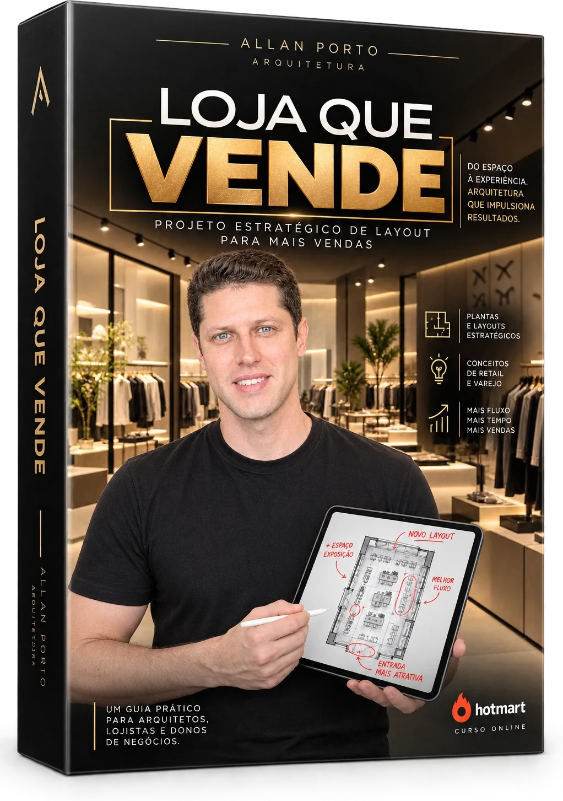

Aula 01
Aula 01 + PDF
Diagnóstico do fluxo + vitrine
O trajeto natural do cliente e a regra da vitrine com 1 produto-foco. PDF: checklist de vitrine.
Projeto estratégico de layout para mais vendas: fluxo, zoneamento, pontos de decisão e iluminação, aplicados na sua loja em 4 aulas diretas.
Quero transformar minha loja 4 aulas gravadas · 4 PDFs de apoio · Estudo de caso real
Do espaço à experiência: arquitetura que impulsiona resultados.
Por onde o cliente entra, pra onde olha primeiro e onde desiste. E a vitrine que faz parar na calçada.
Produto de maior margem na zona quente, zona fria puxando o cliente pela loja inteira.
Criar, de propósito, os lugares onde o cliente para, olha e considera comprar.
Luz de vitrine, spot no produto-foco, caixa sem sombra e provador que vende.
Um guia prático para arquitetos, lojistas e donos de negócio: como planejar o layout, a vitrine, o zoneamento e a iluminação para que o espaço conduza o cliente do primeiro olhar até o caixa.
O trajeto natural do cliente e a regra da vitrine com 1 produto-foco. PDF: checklist de vitrine.

Zona quente × zona fria e onde colocar cada produto. PDF: template de zoneamento para preencher.

A ilha de pausa que faz o cliente parar no meio do trajeto. PDF: checklist de ponto de decisão.

Luz em camadas: vitrine, produto-foco, caixa e provador. PDF: guia de iluminação por segmento.

Um PDF para cada aula, pra imprimir e aplicar na loja no mesmo dia.

Os 4 pilares aplicados numa loja real de 19,52 m² em Caruaru/PE.
9 entregáveis para sair da teoria e mudar a sua loja ainda esta semana.
Retail Design com CAU, pós em Arquitetura Comercial e experiência em expansão de lojas.
Cada aula termina com uma mudança pra aplicar no mesmo dia.
Foco em ajustes pontuais de alto impacto: posição, luz, organização.
Exemplos para moda, acessórios, alimentício e farmácia em cada aula.
Plantas e renders de uma loja projetada de verdade, com as decisões explicadas.
Checklists e templates para imprimir e usar dentro da sua loja.
Compra segura pela Hotmart.
No celular ou computador, no seu ritmo.
Checklists e templates na mão, dentro da loja.
Vitrine, zonas, pausa e luz trabalhando pela venda.
Prints reais de conversas com lojistas e profissionais que aplicaram o Método Loja que Vende.


Se você tem, gerencia ou projeta uma loja física, o Loja que Vende foi feito para o seu dia a dia.
Que têm movimento, mas sentem que a loja não vende o que devia, e não podem pagar um projeto completo agora.
Que cuidam da exposição, da vitrine e da organização no dia a dia e querem critério técnico.
Que querem entregar projetos comerciais pensados para vender, não só para ficar bonitos.

Allan Porto · Arquiteto e Urbanista · CAU-PE A166156-6
Arquiteto especialista em Arquitetura Comercial e Retail Design, com pós Master pelo IPOG. Foi diretor de expansão e novos negócios, respondendo pela conta no fim do mês, e gestor de obras comerciais, colocando loja de pé com prazo e orçamento.
No Loja que Vende, reúne esse cruzamento entre projeto, obra e resultado num método direto, para que lojistas corrijam o que está custando venda sem depender de uma reforma grande.
Um projeto comercial completo custa caro. O Loja que Vende te dá o método para corrigir o que mais custa venda hoje, com os seus próprios recursos.

Sim. Você tem 7 dias de garantia. Se não gostar do curso por qualquer motivo, é só pedir o reembolso pela própria Hotmart dentro do prazo e recebe 100% do valor.
Logo após a confirmação do pagamento, a Hotmart envia o acesso para o seu e-mail. As aulas e os PDFs ficam na área de membros.
Não. O método foca em ajustes pontuais de alto impacto: posição dos produtos, vitrine, pontos de pausa e iluminação.
Serve. O estudo de caso do curso é uma loja de 19,52 m². Os princípios valem para loja de bairro, de shopping e showroom.
Sim. Você vai ver como transformar critérios de varejo (fluxo, zoneamento, pontos de decisão e luz) em decisões de projeto que o seu cliente lojista entende e valoriza.
Fale direto com o Allan pelo WhatsApp ou pelo Instagram @allanporto_arquitetura.
Você compra sem risco. Se em até 7 dias entender que o curso não é para você, devolvemos 100% do valor investido.